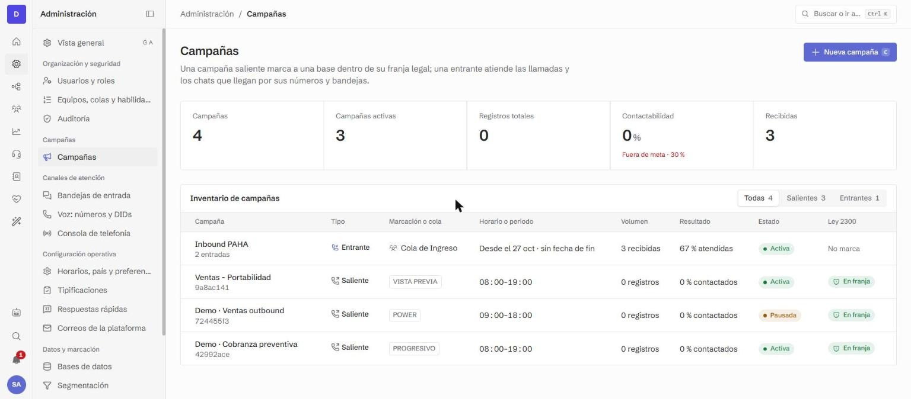
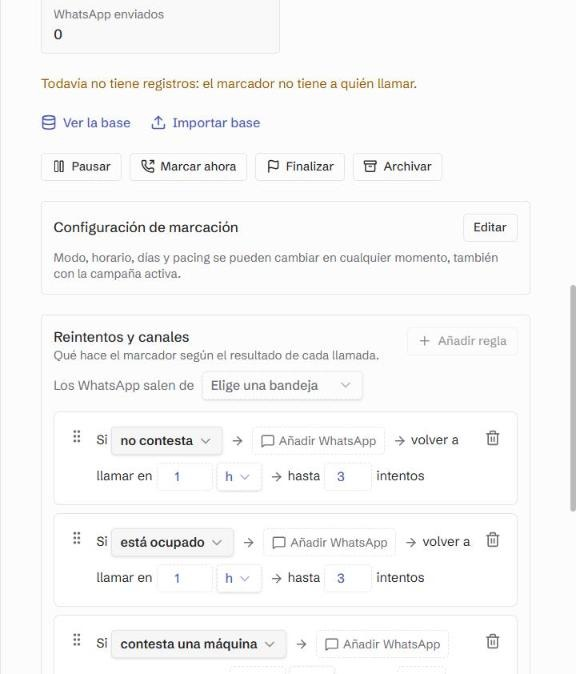
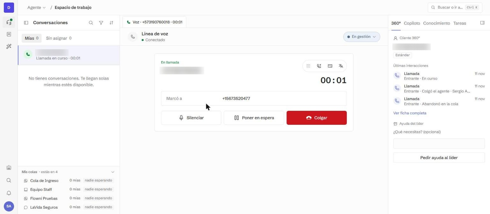
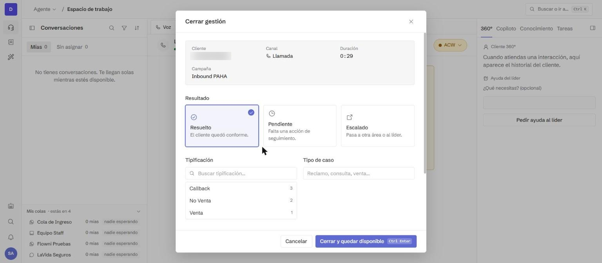
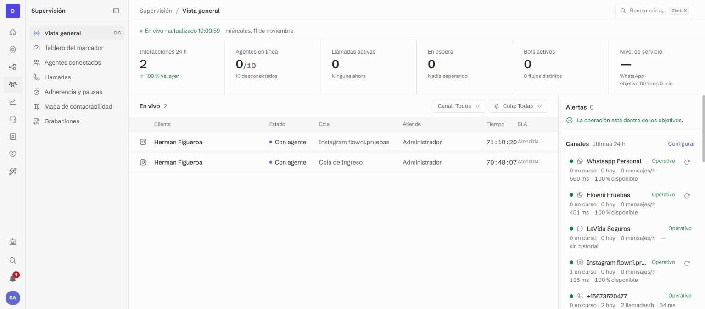
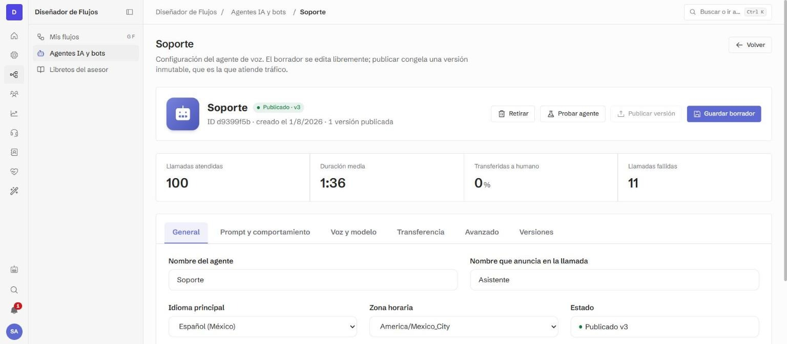
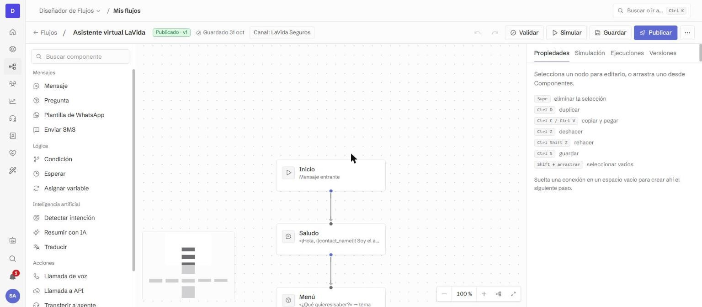
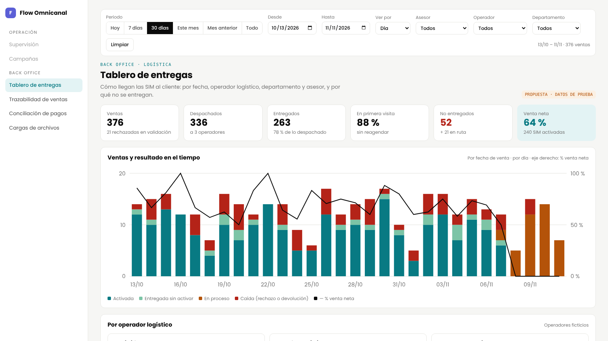

Flow Omnicanal · Una plataforma de DesarrollAndo
Flow Omnicanal es un CTI propio, con voz, WhatsApp e IA, que corre sobre su troncal y se conecta con sus sistemas.
DesarrollAndo · en alianza con
Por qué un CTI propio
| Con herramientas separadas | Con Flow Omnicanal | |
|---|---|---|
| Datos | Marcador, CRM y bot guardan cada uno su parte | Llamada, chat, gestión y grabación en el mismo registro |
| Orquestación | Integraciones punto a punto entre proveedores | Reglas dentro de la campaña: llamada, WhatsApp, nueva llamada |
| Telefonía | El proveedor define el operador y la tarifa | Su troncal SIP o la nuestra; el minuto lo negocia usted |
| IA | Un bot aparte, con su propio contrato | Agentes de voz, copiloto y calidad sobre los mismos datos |
| Evolución | La hoja de ruta la decide el fabricante | El equipo de DesarrollAndo la construye; el piloto prioriza lo que sigue |
Flow Omnicanal, plataforma de DesarrollAndo · Xtendo Global
Arquitectura
Entradas
Su troncal SIP u operador
WhatsApp Business API
Chat web
Bases de campaña
Flow Omnicanal
Marcador y campañas
Colas y reparto de llamadas y chats
Agentes de IA de voz y flujos
Grabación, transcripción y reportes
Personas
Asesor en el navegador
Supervisor en vivo
Back office
Sus sistemas
CRM y BI
Orion
Por API y webhooks
En la nube, con una empresa separada por cliente; el asesor solo necesita navegador y diadema. DesarrollAndo es Meta Business Partner: las líneas de WhatsApp de Xtendo se conectan directo y las plantillas se crean desde la misma plataforma.
Flow Omnicanal, plataforma de DesarrollAndo · Xtendo Global
Marcación y orquestación


Masivo en tres canales: voz con asesores o agentes de IA, WhatsApp y SMS, sobre sus propias líneas.
Reglas por resultado: no contesta, ocupado, contestadora o falla → WhatsApp y nueva llamada, hasta N intentos.
Modos y cumplimiento: vista previa, progresivo y power; ventana legal y lista Robinson.
Flow Omnicanal, plataforma de DesarrollAndo · Xtendo Global · Capturas reales
Puesto del asesor


En la llamada: espera, teclado, transferencia y traducción.
Al lado: ficha 360°, libreto con datos de la base y copiloto.
Al colgar: resultado y tipificación obligatorios.
Flow Omnicanal, plataforma de DesarrollAndo · Xtendo Global · Capturas reales tomadas hoy
Supervisión y calidad

En vivo: escuchar, susurrar al asesor o entrar a la llamada.
Equipo: adherencia y pausas, con aprobación si se configura.
Calidad con IA: nota por criterio, cumplimiento y errores críticos en cada llamada transcrita.
Además: tablero del marcador, mapa de contactabilidad y grabaciones.
Flow Omnicanal, plataforma de DesarrollAndo · Xtendo Global · Captura real tomada hoy
Modelos de IA

El modelo se elige por agente: por costo, latencia o calidad. Cada agente se prueba y se publica por versiones.
Con su propio contrato, Xtendo usa su clave: se guarda cifrada y no se vuelve a mostrar.
| Componente | Proveedor y modelo |
|---|---|
| Agente de voz | Modelos abiertos de baja latencia vía Groq, u otro del catálogo |
| Voz sintética | ElevenLabs (Flash) |
| Transcripción | Deepgram, separando asesor y cliente |
| Asistentes de texto | Gemini (Google) u otro proveedor |
| Calidad automática | Groq, OpenRouter u OpenAI |
| Copiloto | Claude (Anthropic), con modelo de respaldo |
Flow Omnicanal, plataforma de DesarrollAndo · Xtendo Global · Captura real tomada hoy
Integración y datos

En los flujos, el paso «Llamada a API» consulta o actualiza sus sistemas en mitad de la conversación.
Webhooks: JSON firmado con HMAC-SHA256; hasta 5 reintentos en 24 horas.
API: claves con permisos mínimos y revocación inmediata.
BI: exportación CSV y PDF, y datos crudos por API.
Orion: carga de bases y devolución de resultados por API.
MCP: consulta desde Claude o ChatGPT con los permisos del rol.
Flow Omnicanal, plataforma de DesarrollAndo · Xtendo Global · Captura real tomada hoy
Back office · Propuesta

Tablero: entregas por operador, departamento y asesor, con motivos de no entrega; filtra por día, semana o mes.
Trazabilidad: cada venta cruzada con la sábana logística hasta la SIM activa.
Conciliación: la liquidación mensual del cliente contra lo activado; muestra desviaciones y arma la reclamación.
Flow Omnicanal, plataforma de DesarrollAndo · Maqueta con datos de prueba · Abrir la demo interactiva
Seguridad y gobierno
| Rol | Qué puede hacer |
|---|---|
| Propietario | Todo lo del administrador, y da o quita esos dos roles |
| Administrador | Canales, proveedores, números, colas, IA, flujos, campañas y usuarios |
| Supervisor | Operación en vivo, marcador, pausas, grabaciones y reportes |
| Desarrollador | Telefonía, API, flujos y agentes de IA; no ve usuarios ni campañas |
| Agente | Su espacio de trabajo: llamadas, chats y contactos |
| Visor | Solo el tablero ejecutivo y la voz del cliente |
Auditoría: quién, qué, cuándo y desde dónde, incluido lo que hace la IA.
Datos: AWS en EE. UU.; transcripciones 36 meses, audio 24.
Límite de la IA: no escribe ni llama a clientes, no lanza campañas, no borra.
Flow Omnicanal, plataforma de DesarrollAndo · Xtendo Global
Aclaraciones
● Hoy
● Propuesta
● Hoja de ruta
● Se define juntos
| Tema | Estado |
|---|---|
| Televentas y cobranza | Hoy |
| Voz, WhatsApp, chat web y bots | Hoy |
| Orquestar la siguiente acción, según su requerimiento | Hoy |
| Personalizar campañas, bots e integraciones | Hoy |
| Voz masiva con asesores y bots | Hoy |
| SMS masivo | Hoy |
| WhatsApp masivo con plantillas | Hoy |
| Back office posventa | Propuesta |
| Elegir el modelo de IA | Hoy |
| Tema | Estado |
|---|---|
| Autonomía: campañas, libretos, reportes | Hoy |
| Marca blanca | Se define juntos |
| Reventa a sus clientes | Se define juntos |
| Analítica | Hoy |
| Control y monitoreo de asesores | Hoy |
| Datos crudos para su BI | Hoy |
| Grabaciones y chats almacenados | Hoy |
| Seguridad de la información | Hoy |
| Predictivo e integración con Orion | Hoja de ruta |
Flow Omnicanal, plataforma de DesarrollAndo · Xtendo Global
Cómo empezamos
Paso 1
Campaña, volúmenes, su marcador, su CRM y la secuencia a orquestar.
Paso 2
Su troncal, las reglas de Bolivia, la campaña, los libretos y los usuarios.
Paso 3
Un grupo pequeño de asesores y una campaña, con acompañamiento diario.
Paso 4
Contactabilidad, conversión y costo por venta frente a hoy.
Software hecho por agentes. Respaldado por personas.
Con los resultados del piloto definimos juntos lo que sigue: predictivo, conector con Orion y back office.
en alianza con